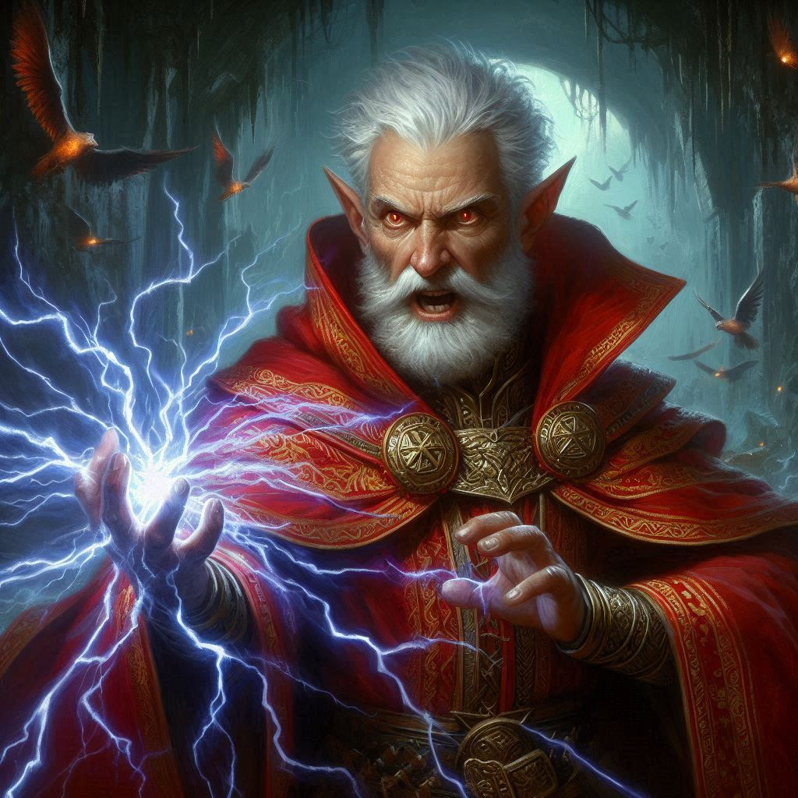
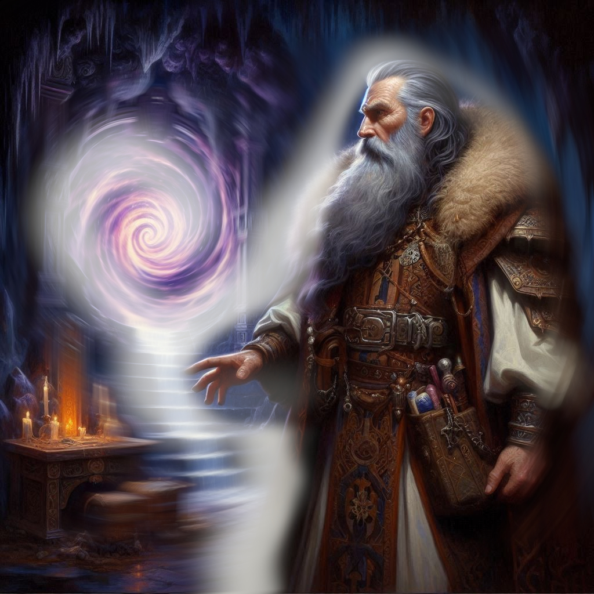
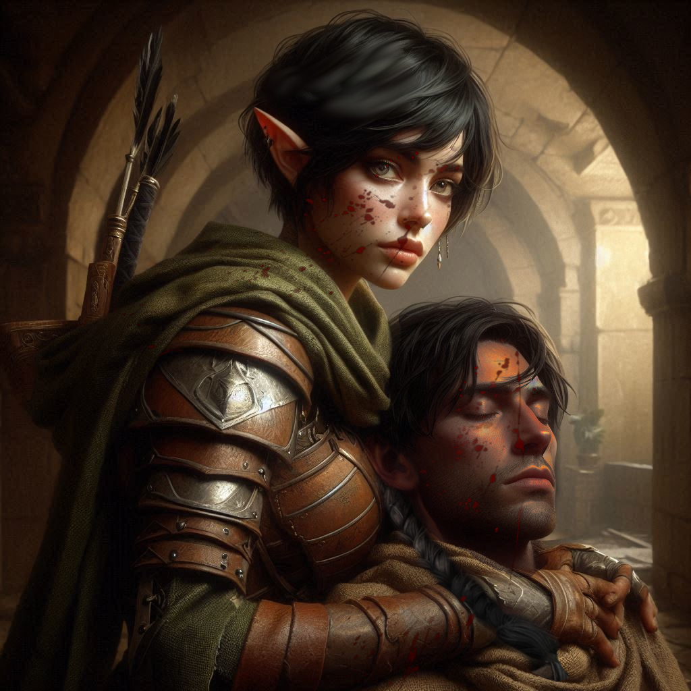
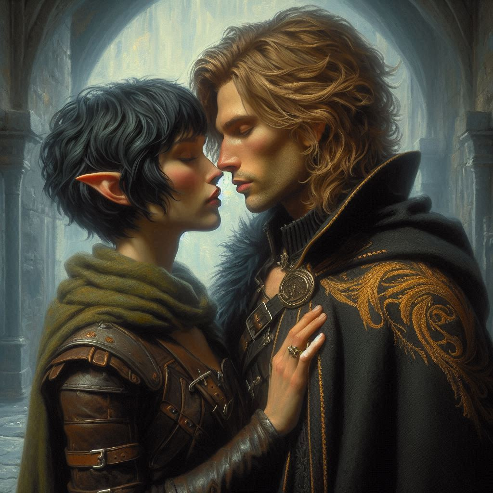

Bittersweet Triumph
"You’re blinded by vengeance, Kira," Onyx’s voice cuts through the dim, cold air of the Shadow Realm. His piercing blue eyes meet yours, full of disappointment, and something else—desperation. "Arresting Jorsh won’t save Belladonna, won’t stop Varis. This fight is bigger than your personal quest."
You bite back the sharp retort bubbling in your chest. For years, you've been haunted by the memory of Jorsh’s betrayal, by the sense of abandonment. And now, the man you once loved stands before you—no longer the boy you once knew, but a rogue sorcerer on the cusp of destruction. Yet, as you stand here, the weight of Onyx's words sinks in. There’s something in his tone, something in the flicker of his gaze, that tells you he’s right.
"You don’t understand," you mutter, your voice breaking slightly. "I have to bring him in. He’s a criminal."
Onyx shakes his head, a deep sigh escaping his lips. "Criminal or not, Jorsh is the only one who knows how to stop Varis. And without me... he’ll have to be your guide."
Your heart hammers in your chest. The thought of working alongside Jorsh again feels like walking into an old wound. But the Shadow Realm is a labyrinth of dark magic, and without Onyx’s guidance—or Jorsh’s—none of you will leave this place alive.
"Fine," you finally mutter, sheathing your blade with a reluctant clink. "We work together. But once this is over, Jorsh answers for his crimes."
A brief flash of something—relief, perhaps—crosses Jorsh’s face, but it’s gone in an instant, replaced by his familiar smirk. "Always so righteous, Kira. Let’s see if that righteousness survives the Shadow Realm."
Onyx gestures toward the massive, ancient door behind him, carved with sigils of power that glow faintly with eerie, purple light. "The Chamber of Portals lies ahead. Beyond that, Varis will be preparing the ritual to summon Yaldaboath. We don’t have much time."
You exchange a glance with Elias, who gives you a silent nod of approval, though his expression betrays the pain of knowing you’ll have to work with Jorsh. His affection for you has never been more obvious, but there’s no time to address it now. Duty comes first.
The three of you step through the doorway, and the chamber beyond is unlike anything you’ve seen before. Massive stone archways line the walls, each one leading to a different part of the Shadow Realm. Dark energy crackles through the air, sending shivers down your spine. At the center of the room, Varis stands, his back to you, hands raised toward the ceiling as black tendrils of magic swirl around him.
"You’re too late," he sneers, turning to face you. His eyes glint with malicious glee. "Yaldaboath will rise, and your kingdom will fall."
Jorsh steps forward, raising his hand as a torrent of fiery energy erupts from his palm. "Not if I have anything to say about it."
Varis sneers and counters with a blast of dark magic. The force of the clash shakes the ground beneath you. You draw your bow, launching arrows at Varis’s mercenaries as they pour into the room, trying to overwhelm you and Elias.
"Keep them off us!" Jorsh yells, pouring more of his energy into the battle with Varis.
You and Elias hold the line, fending off the dark elves with skill and precision, but the sheer number of them begins to take its toll. Your arms ache from the constant stringing of your bow, and you can hear Elias’s labored breaths beside you.
Suddenly, a scream pierces the air. You turn, and your heart drops. Elias staggers, a dark elf blade buried deep in his side. "Elias!" you cry, rushing to him. Blood pours from his wound, his face pale.
"I’m sorry," he whispers, his hand clutching yours as he crumples to the floor. "I wanted... to protect you."
"No... no!" Tears sting your eyes, but there’s no time to grieve. The battle still rages around you. Varis and Jorsh’s clash intensifies, and you can feel the power emanating from their struggle.
Onyx steps forward, raising his arms, his voice booming. "Yaldaboath will not rise this day!" Energy surges around him, but something changes. You see the light in Onyx’s eyes dimming, the very life force draining from him. "It must be done," he whispers, as if speaking to himself. His sacrifice. It all makes sense now.
With one final burst of power, Onyx collapses to the ground, his body crumbling into dust. His magic flows into the chamber, disrupting Varis’s ritual and leaving the dark elf weakened.
Varis stumbles, his dark magic faltering. Jorsh, seeing the opportunity, strikes with all his might, blasting Varis across the room. The Minister of Trade lies crumpled against the far wall, defeated but not yet dead.
Jorsh turns to you, his face pale but resolute. "It’s over. We’ve won. But now... we have a choice."
His eyes lock onto yours, and for the first time, you see the boy you once knew—the boy you loved. "The Shadow Realm is ours now. Together, we could rule it. We could reshape this broken world."
Your heart pounds in your chest. The weight of his words sinks in. Jorsh isn’t asking for forgiveness—he’s offering power, a chance to change everything. But there’s still the matter of your duty, of the justice you swore to bring him to.
You look down at Elias’s body, his blood staining your hands. Then back at Jorsh, standing tall, waiting for your answer.
You weep bitterly. Jorsh is kneeling beside you now, gently stroking your hair. You bury your face in his shoulder as he rests his chin on your head and holds you.
"Elias is gone," you say.
"Did you love him?" Jorsh asks.
"It was… complicated," you say. "I loved him as a friend… as a brother…but I could not return his affection the way he wanted me to."
"I understand," Jorsh says. "I’ve never been able to love anyone else since I left you."
You pull back and look up into his eyes. His face is tender and his expression harkens to bygone days when it was just the two of you and a world of possibilities in front of you. With a heavy sigh and an even heavier heart, you lay Elias’s body gently to the ground and pull his blood soaked cloak around him, covering his face with the hood of his cowl.
"Good-bye, my friend," you say, wiping a tear from your cheek with the back of your hand.
"Elias was a good man," Jorsh says, placing a hand on Elias’s chest. "He sacrificed everything and died a hero. I honor his tribute."
"You’re different somehow." You continue searching Jorsh’s face for signs of deception or deceit, but you find nothing.
"I feel like me again," Jorsh sighs.
"But things have changed," you say.
"You still have to arrest me." Jorsh looks away and nods as if accepting his future.
"I’m a ranger now. Justice is important." You think about Onyx’s words, condemning you for your dogmatic drive to arrest Jorsh… to prove yourself by bringing The Betrayer to justice. You consider that Jorsh was only doing what he thought he needed to do in order to save Belladonna and the Kingdom of Yew. And he did it. Together with Onyx, they stopped Varis and Yaldaboath. Maybe there are times when mercy should trump justice, you think to yourself.
"You’re right," Jorsh whispers. "I’ve broken some laws. Justice is important."
"Jorsh, what would you do if I just happened to slip up and you accidentally evaded arrest?"
“Now that Varis and Yaldaboath are defeated, I only want one thing.”
“What do you want?” You study his face.
“Your forgiveness. And if it were possible, your love,” Jorsh says.
“What if I can’t forgive you?”
“Then I go willingly to meet the magistrate and the royal courts. If you don’t love me anymore, then I accept justice as my fate.”
“And if I forgive you?”
“Then the world is ours, starting with the Realm of Shadows.”
You look at his mouth. He touches your jaw. You move in slowly, your lips hovering over his. You watch until he closes his eyes and your lips meet for the first time in many years.